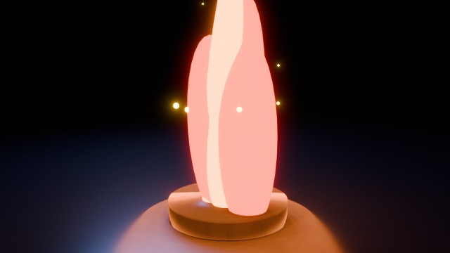

Fire Column
fire-column
A short stylized flame animation built from layered emissive flame tongues, flickering light, glow, and rising sparks.
source 5c9e0e14f0
| duration_seconds | 3.0 |
|---|---|
| fps | 24 |
| width | 640 |
| height | 360 |
| video_size_bytes | 95,958 bytes |
| poster_luminance_stddev | 72.766 |
| bright_pixel_ratio | 0.182305 |
| warm_pixel_ratio | 0.068837 |
preview · validation · source · result · Actions #8